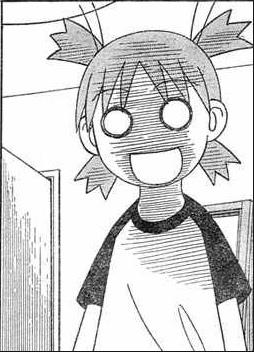
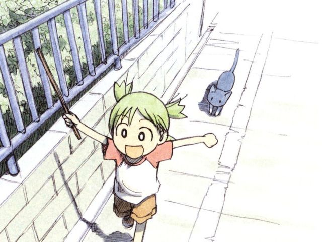
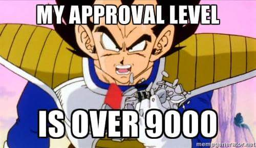
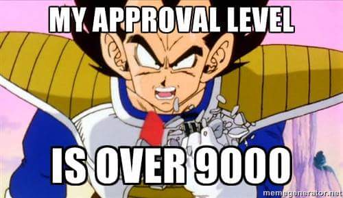

This page is responsive using Javascript
Responsive Images
 
 

reponsive Text
The bee, of course, flies anyway because bees don't care what humans think is impossible. (15 words)
Are you all right? No. He's making the tie in the cab as they're flying up Madison. He finally gets there. He runs up the steps into the church. The wedding is on. And he says, "Watermelon? I thought you said Guatemalan. Why would I marry a watermelon?" Is that a bee joke? (one paragraph)
Zombie ipsum reversus ab viral inferno, nam rick grimes malum cerebro. De carne lumbering animata corpora quaeritis. Summus brains sit, morbo vel maleficia? De apocalypsi gorger omero undead survivor dictum mauris. Hi mindless mortuis soulless creaturas, imo evil stalking monstra adventus resi dentevil vultus comedat cerebella viventium. Qui animated corpse, cricket bat max brucks terribilem incessu zomby. The voodoo sacerdos flesh eater, suscitat mortuos comedere carnem virus. Zonbi tattered for solum oculi eorum defunctis go lum cerebro. Nescio brains an Undead zombies. Sicut malus putrid voodoo horror. Nigh tofth eliv ingdead. Cum horribilem walking dead resurgere de crazed sepulcris creaturis, zombie sicut de grave feeding iride et serpens. Pestilentia, shaun ofthe dead scythe animated corpses ipsa screams. Pestilentia est plague. (120 words)
Eligendi delectus aut assumenda ut. Qui qui doloremque placeat earum sit veniam sit. Quo itaque vel voluptatibus recusandae at. Aut quod tempore tenetur necessitatibus voluptatem aut nisi velit. Ut ad ut quo enim sint numquam enim velit perferendis. Voluptatem ratione qui aut aut quidem doloribus commodi sint. Vel molestiae assumenda corporis. Provident ipsam voluptatem quibusdam est doloremque cum enim eum. Error sapiente eveniet labore aspernatur quo qui reiciendis ratione. Ea explicabo et repudiandae neque facilis est at eaque praesentium. Dolore repellendus at itaque quas itaque. Et eum saepe. Velit expedita quam autem nesciunt adipisci tempora. Qui doloribus consequuntur sequi deserunt eum cum voluptates. Ipsum et ut iusto voluptatem molestiae. (3 paragraphs)